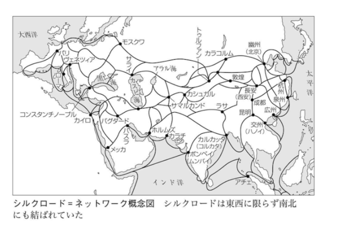

シルクロード
公開日：

シルクロード（絹の道）は、前近代においてユーラシア大陸の東西交流の舞台となった地域。
- 広義のシルクロード
- 海のシルクロード
- 陸のシルクロード（一般的なシルクロードの定義）
- 草原の道
- オアシスの道（シルクロードのイメージ）
シルクロードは東西だけでなく、南北にも網目状に巡らされていたし、気候や政治・経済事情の移り変わりに応じてめまぐるしく変化してきた。また、運送はもっぱら家畜（もしくは人力）に頼っていたので、商品は軽量・高価な奢侈品を主力としていた。また、商品は一人が長距離を運ぶのではなく、複数で中・短距離をリレーするのが普通であったらしい（それらの点が、大航海時代・近代以降はネックとなり、海の道に取って代わられた）。
主な取引
- 中国：絹織物 ・紙 ・茶
- ペルシア ・東地中海方面：金銀器 ・ガラス製品 ・乳香 ・薬品 ・絨毯
- インド ・東南アジア：胡椒 ・香木 ・宝石 ・珊瑚 ・象牙 ・犀角 ・鼈甲 ・藍
- ロシア ・シベリア ・満洲：高級毛皮 ・朝鮮人参 ・鹿角 ・魚膠
- 中央アジア
- コ ータン：玉
- バダクシャン：ラピスラズリ
- クチャ：硇砂 （どうしや ）
- チベット：麝香やヤク牛の尻尾
- 毛織物 ・綿織物 ・真珠 ・装身具 、鎖帷子 ・装飾鞍などの武具 、葡萄酒 ・蜂蜜 ・大黄など
- 奴隷と家畜（重いが、自分で動くため、障害にはならない）
- ウマ、ラクダ：足が速く高価
- ヒツジ、ヤギ、ウシ：安価、鈍足（短距離での重量物の輸送にはウシでも可？）